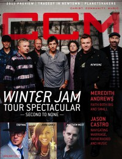

NewSongOn the cover
January 2013
CCM Digital | Media coverage- Dec 1989 in CCM "Notebook: Lighting Their World", by Devlin Donaldson
- Aug 1991 in CCM "Faces: NewSong", by Bruce A. Brown
- Dec 1993 in The Lighthouse "NewSong", by J. Warner Soditus
- Feb 1995 in CCM "NewSong Gets Ready", by Mark A Smeby
- Apr 1997 in CCM "Key Change", by Joan Brasher
- Dec 1998 in Living With Teenagers "Profile: Love Revolution"
- Jun 1999 in Church Musician Today "Tied to the Dock", by Betty McLellan Jones
- Jul 2000 in Living With Teenagers "Under the Influence: In Concert: NewSong", by Mike Nappa
- Jan 2001 in CCM "Can't Keep A Good Band Down", by Debra Akins
- Dec 2001 in CCM "Story Behind the Song: The Christmas Shoes", by Christina Farris
- Nov 2003 in CCM "If The Shoe Fits", by Steven Douglas Losey
- Mar 2004 in CCM "Standing Room Only: Newsong's Winter Jam", by Andy Argyrakis
- Dec 2006 in CCM "List-O-Rama: Ho, Ho, Ho: 5 Christmas Songs of Note", by Chris Well
- Jun 2011 in CCM Digital "Mission Matters: Fatherhood", by Caroline Lusk
- Jan 2012 in CCM Digital "Winter Wonder Jam"
- Feb 2012 in HM "Live Report: WinterJam 2012", by Nicole Murphy
- Jun 2012 in CCM Digital "Musicians Corner: Story Behind the Song: The Same God"
- Jan 2013 in CCM Digital "Winter Jam Tour Spectacular: Second to None", by Caroline Lusk
- Jan 2013 in CCM Digital "Swallow the Ocean"
- 1 Mar 2014 in CCM Digital "Tour Spotlight: The Winter Jam 2014 Tour Spectular, Part One", by Andy Argyrakis
- 1 Jan 2017 in CCM Digital "NewSong & Winter Jam - Love, On Tour", by Kevin Sparkman
Albums & reviews:1981: More Than Music
1981: NewSong Alive
1981: All The Best
1982: The Son in My Eyes
1992: One Heart At A Time: The Best Of NewSong
1993: All around the World 1997: Joy to the Rhythm of the World
1999: Arise My Love: The Very Best of NewSong 2001: The Christmas Shoes 2004: Simply NewSong
2005: Rescue: Live Worship 2016: The Best Christmas Ever!
Award Summary (Nominations / Wins)
Dove Awards1996 Dove Awards1998 Dove Awards- Pop/Contemporary Album: Love Revolution
- Enhanced CD: Joy to the Rhythm of the World
2001 Dove Awards2002 Dove Awards2006 Dove Awards2007 Dove Awards2015 Dove Awards Grammy AwardsBooks about NewSong |